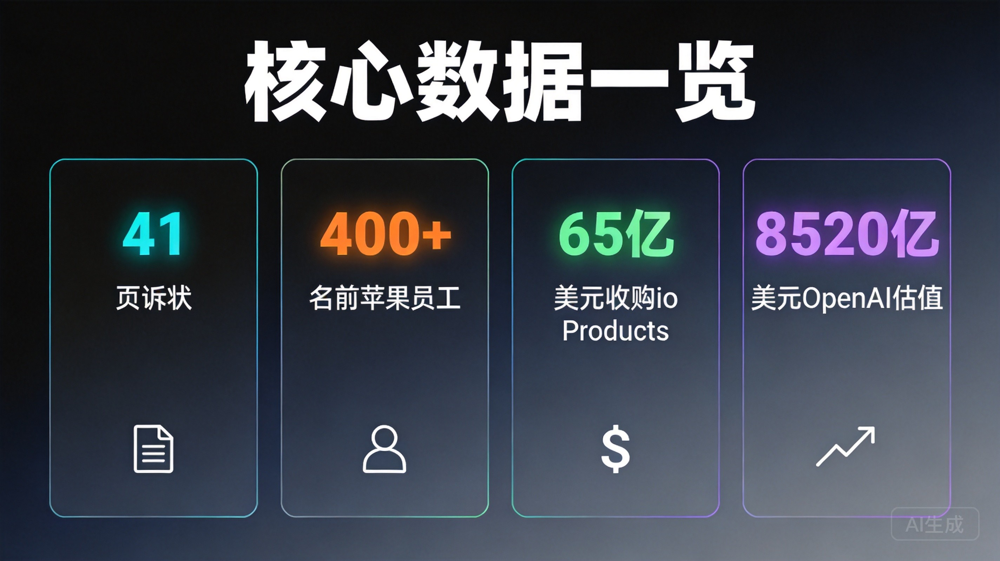
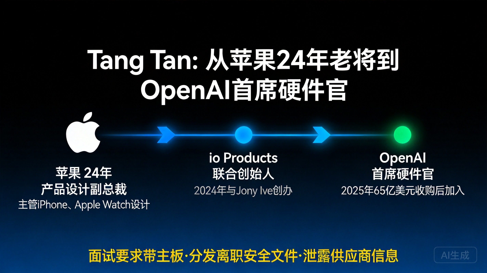
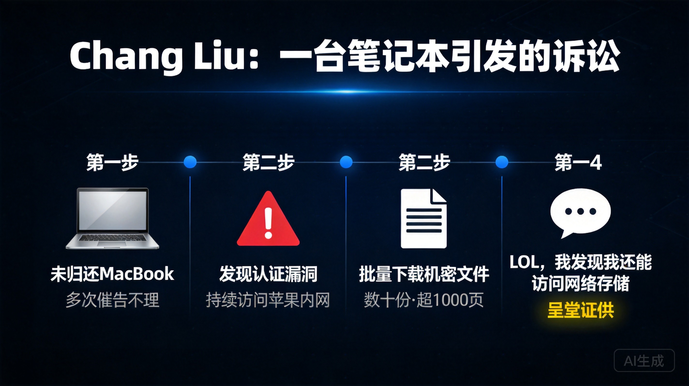
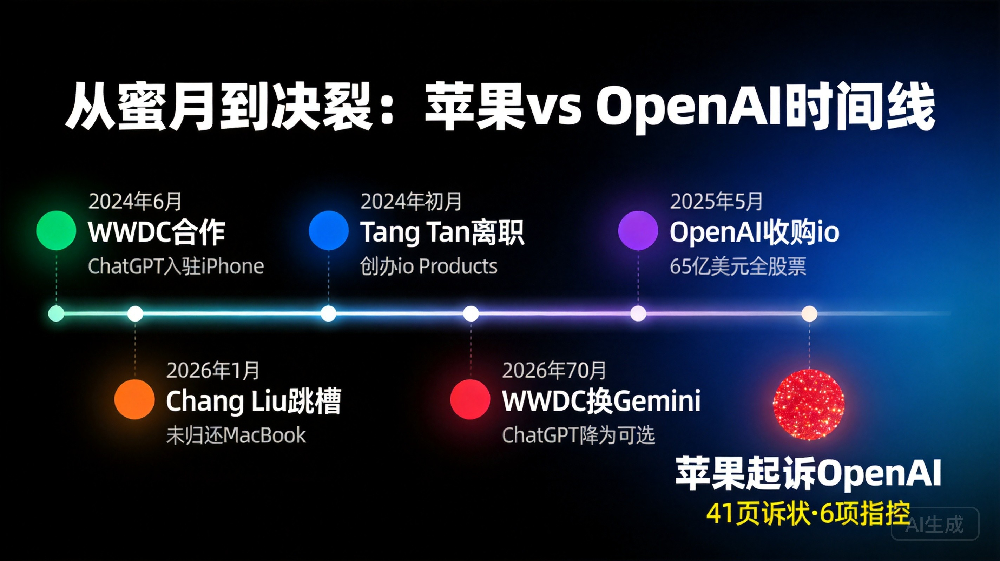
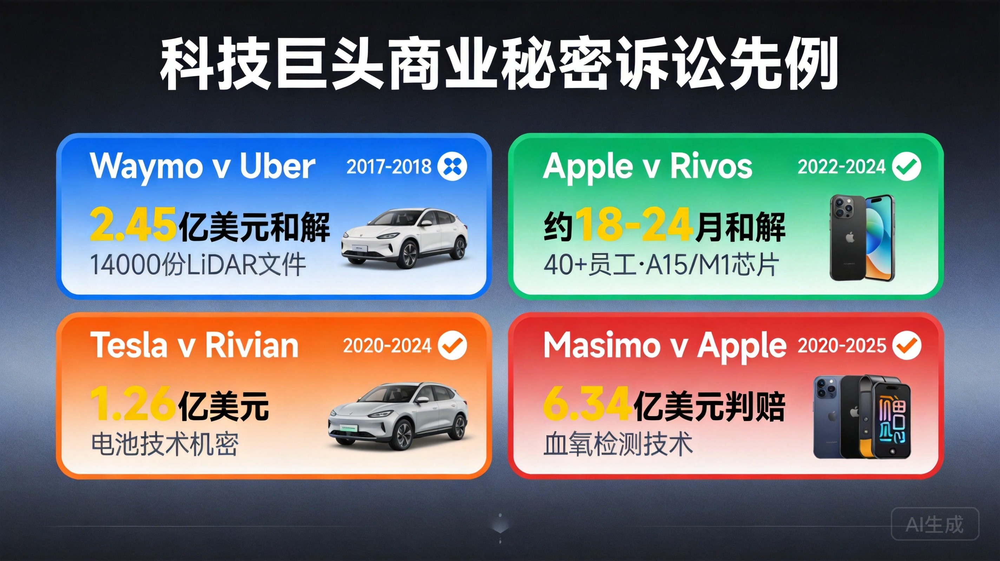
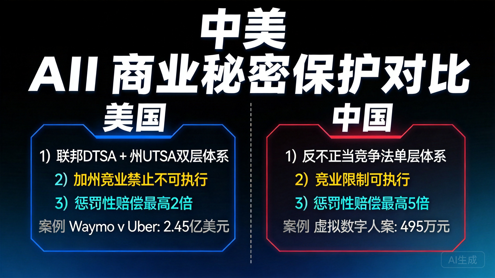
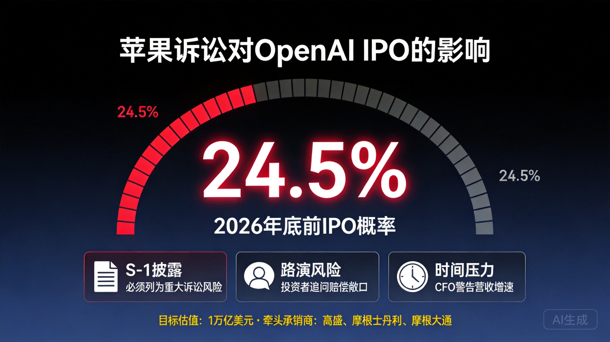
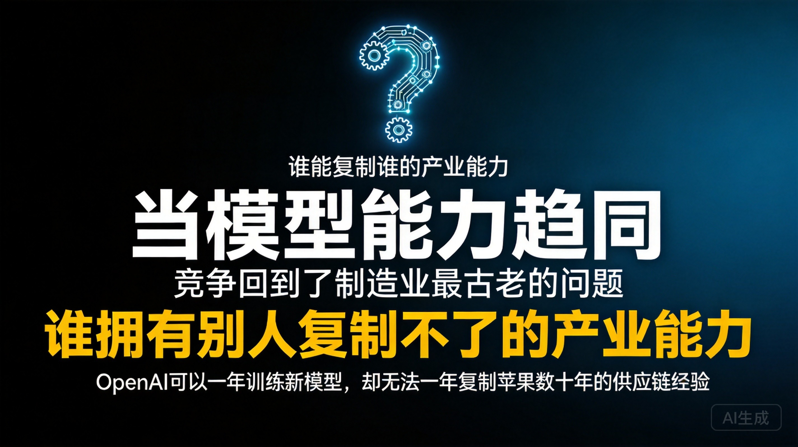

2026年7月10日，苹果公司向美国加州北区联邦地区法院提交41页诉状（案号5:26-cv-07078），以联邦DTSA和加州UTSA为法律基础，起诉OpenAI、io Products及两名前苹果员工系统性盗用硬件商业秘密，标志着两家公司从2024年WWDC上的AI合作伙伴急速逆转为法庭对手。
核心人物Tang Tan在苹果任职24年、主导iPhone和Apple Watch产品设计后，创办io Products并被OpenAI以65亿美元收购，现担任OpenAI首席硬件官——苹果指控他在面试中要求候选人携带苹果电池、逻辑板、SiP芯片等实物零部件到场"展示"，并分发苹果内部离职安全文件指导新员工规避安检。
另一被告Chang Liu离职后未归还苹果笔记本电脑，利用认证漏洞持续访问内部网络下载数十份机密文件，并向前同事发送消息炫耀"LOL，我发现我还能访问网络存储"——这条消息现已成为联邦法院诉状中的呈堂证供。

一、诉讼基本信息
1.1 案件概述
2026年7月10日，苹果公司向美国加州北区联邦地区法院圣何塞分院正式提交民事诉状，案号5:26-cv-07078，案件名称为Apple Inc. v. Liu et al.。诉状全长41页，涵盖6项独立诉讼主张：4项基于联邦《保护商业秘密法》（DTSA，18 U.S.C. § 1836）的商业秘密盗用索赔，分别针对Chang Liu、Tang Tan、OpenAI和io Products；以及2项违约索赔，指控Liu和Tan违反在苹果任职期间签署的知识产权协议。
被告共五方：(1) Chang Liu，前苹果高级系统电气工程师；(2) Tang Yew Tan（唐坦），OpenAI首席硬件官、前苹果产品设计副总裁；(3) OpenAI基金会（OpenAI Foundation）；(4) OpenAI Group PBC（公共利益公司）；(5) io Products（OpenAI硬件子公司，由Jony Ive等人创办，2025年被OpenAI以约65亿美元收购）。值得注意的是，Jony Ive虽是io Products的联合创始人且当前主导OpenAI设备设计工作，但他不在被告名单中。
1.2 诉状核心指控框架
苹果在诉状中构建了一个"系统性、多层次商业秘密盗用"的叙事框架，指控覆盖招聘、在职、离职和供应链四大环节。苹果措辞极为强硬，称OpenAI的硬件业务"建立在最摇摇欲坠的地基之上，因非法依赖窃取的商业机密而烂到了根子里"（原文："rotten to its core by its illegal reliance on misappropriated trade secrets"）。
苹果明确表示，双方关于Apple Intelligence集成ChatGPT的商业协议不是本案争议对象，现有ChatGPT集成功能不会因此受到影响。
二、核心当事人与关键事件
2.1 Tang Tan：从苹果24年老将到OpenAI首席硬件官

Tang Tan（唐坦，全名Tang Yew Tan）在苹果任职长达24年，从产品设计师一路晋升至产品设计副总裁，主管iPhone和Apple Watch的产品设计工作，深度参与iPod、iPhone、Apple Watch、AirPods等多款标志性产品的开发。苹果在诉状中称他掌握"最高等级项目、供应链、制造工艺机密"。
2024年初，Tan离开苹果，与苹果前首席设计官Jony Ive及设计老将Evans Hankey共同创办硬件公司io Products。2025年5月，OpenAI以约65亿美元（全股票交易）收购io Products，将约55名硬件、制造和工业设计专家纳入麾下，Tan随即出任OpenAI首席硬件官，也成为硬件项目的头号招聘官。
苹果对Tan的指控集中在三大方面：
第一，在职期间泄露供应商信息。苹果指控Tan在离职前与"OpenAI或其合作者"开会讨论苹果重要供应商，并将供应商相关信息和行业内部报告发送到个人邮箱。
第二，面试中系统性套取机密——"面试带主板"事件。这是本案最出圈的细节。苹果指控Tan在面试苹果在职员工时，直接使用苹果内部项目代号询问未发布产品计划，要求候选人携带"实物零件"到面试现场进行"show and tell"（展示与讲解）。Axios从诉状中提取了具体清单：电池、逻辑板、SiP封装芯片。被要求带来的还包括CAD设计文件和原型机。一位候选人收到该要求后表示惊讶："我甚至不知道我们可以从办公室拿走这些东西。"苹果认为这已超出正常招聘范围，更像是获取竞争对手商业情报的情报行动。
第三，分发离职安全文件指导规避安检。苹果指控Tan持有一份标注"Need to Know"的苹果内部离职安全管控文件，并将其分发给OpenAI新入职员工，培训他们如何躲过苹果的离职安检。具体指导包括：建议离职员工不要透露下家是OpenAI，以延长标准的两周通知期继续接触机密信息；传授如何避免被当场请出大楼的"dreaded walk out"；如果苹果人事"让你签任何东西"，先来知会OpenAI。
2.2 Chang Liu：未归还的MacBook与网络漏洞

Chang Liu在苹果担任高级系统电气工程师8年，深度参与苹果多项最敏感的在研产品项目。2026年1月，他正式离职加入OpenAI。
苹果对Liu的指控围绕四条主线：
未归还笔记本电脑。苹果多次通过邮件、短信要求Liu完成离职交接、归还设备和签署保密确认函，但他全程不予回应，至今未归还至少一台苹果配发的工作电脑。
利用认证漏洞持续访问内网。Liu在入职OpenAI之后，发现了苹果企业认证系统一个此前无人知晓的漏洞，依靠这个漏洞和未归还的笔记本电脑持续访问苹果的云端文件存储。他给一位仍在苹果的前同事发消息炫耀："LOL，我发现我还能访问(网络存储)，太搞笑了。"这条消息原文写入联邦法院诉状，成为呈堂证供。
批量下载机密文件。苹果称在接下来数周内，Liu一边在OpenAI从事硬件研发，一边下载了数十份苹果机密文件，包括未发布产品的详细信息、工程演示文稿、技术规格、专有项目数据，其中超过1000页为硬件制造与测试流程文档。许多文件上明确标有"保密"字样。苹果还指控Liu借用前同事的工作电脑访问苹果网络。
指导他人窃取文件。苹果指控Liu在挖一位前同事去OpenAI时，传授了拷贝机密文件的技巧，教她如何"避免和安全团队产生麻烦"，并建议两人改用Line Messenger聊天以免被苹果发现。据TechCrunch梳理，Liu甚至给至少一位应聘OpenAI的苹果同事画过面试重点。
2.3 "供应商被误导"事件：金属表面处理工艺
这是苹果诉状中一个独立且尤为严重的指控维度。苹果指控OpenAI找到一家与苹果合作的制造伙伴厂商，让对方为OpenAI执行一项苹果发明的专有金属表面处理工艺，并误导该伙伴相信他们已获得苹果的授权。
Fast Company专门撰文分析此事，指出苹果金属表面处理工艺不仅关乎外观，更代表了苹果不同于竞争对手"购买现成零件"的战略——苹果投资定制了专有机械设备安装在供应商工厂中，以保护当前和未来产品的设计与开发。苹果诉状中的律师论证实质上是说：这种工艺是苹果多年研发投入的结晶，OpenAI试图通过欺骗供应商的方式免费获取。
"让苹果现有员工冒着风险带着零件来面试，与其说是为了别的什么，不如说是为了测试他们有多渴望加入OpenAI。攻击苹果的供应链无异于宣战。"
—— 圣克拉拉大学教授 Paul Semanza
2.4 超过400名前苹果员工的人才迁徙
苹果在诉状中给出一个令人震惊的数字：已有超过400名前苹果员工加入OpenAI，覆盖产品设计、屏幕、天线、供应链管理、硬件采购等几乎完整的硬件研发线工种。2026年6月，主导苹果Vision Pro头显研发的副总裁Paul Meade也转投OpenAI硬件团队——Meade在苹果工作超过15年，正负责苹果对标Meta Ray-Ban的智能眼镜项目，其离职与苹果新任首席硬件官Johny Srouji的部门重组导致"变相降级"有关。
至此，OpenAI已集齐iPhone（Tang Tan）、Apple Watch（Tang Tan）、AirPods、Vision Pro（Paul Meade）等产品的设计与硬件人才，搭起了一支带有"小型iPhone团队"色彩的硬件班底。苹果花了十几年打磨的硬件军团，OpenAI用一年半就"复制"了个轮廓。

三、法律争议焦点
3.1 商业秘密盗用的具体指控与证明难度
苹果必须在法庭上证明三个核心要素：(1)其所主张的信息构成受保护的商业秘密（即不为公众所知悉、具有独立经济价值且已采取合理保密措施）；(2)被告通过不正当手段获取、披露或使用了这些信息；(3)苹果因此遭受了损失。
苹果引用的保密措施包括：保密标记、受限系统、知识产权协议、离职程序和公司设备监控。OpenAI可以挑战这些信息是否真正构成商业秘密、苹果的保密措施是否合理、以及被告是否实际使用了受保护信息。
3.2 人才招募vs.系统性挖角：法律边界
这是本案最核心的法律争议。在加利福尼亚州，员工有权随时离开雇主并为任何雇主工作——这是加州法律的基本原则。单纯从竞争对手招聘人才本身受法律保护。苹果必须证明OpenAI的行为超出了合法招聘的范畴，构成制度化的商业信息提取行为，而非个别员工的独立行为。
xAI v. OpenAI案提供了直接先例。2025年9月，xAI在加州北区联邦法院起诉OpenAI，指控其招聘前xAI工程师并诱导泄露机密。法官Rita Lin于2026年2月首次驳回，6月15日再次以"不可修改"方式驳回，裁定"询问候选人的既往工作属于正常招聘行为，不能自动推导出侵权"。OpenAI随后要求xAI支付超过100万美元法律费用。
然而，苹果案的指控远比xAI案具体和严重。xAI案主要指控信息层面的交流，而苹果案涉及：(1)实物零部件的转移（电池、逻辑板、SiP芯片）；(2)网络漏洞入侵和远程数据下载；(3)对供应商的欺骗行为；(4)分发离职安全文件进行制度性规避。正如Lumida News指出的，这是"physical and technical artifacts, not just information"——实物和技术制品，而不仅仅是信息。
3.3 苹果的索赔与禁令请求
关于用户提及的"8520亿美元索赔"：这是一个关键的误解。8520亿美元是OpenAI的私人市场估值（截至2026年7月，由5%政府股权提案推算），而非苹果在诉状中要求的赔偿金额。苹果未指定具体索赔数额，但其诉求清单包括：实际损失赔偿、不当得利返还、合理特许权使用费（作为替代计算方式）、惩罚性赔偿（如认定"故意且恶意"盗用，最高可达补偿性赔偿2倍）以及律师费。
苹果的禁令请求包含4项核心内容：(1)对所有被告发布初步和永久禁令，防止商业秘密盗用；(2)禁止持有、使用或披露苹果商业秘密；(3)禁止篡改、销毁或处置证据；(4)命令归还所有苹果财产。值得注意的是，诉状并未要求阻止OpenAI任何设备发布——这在法律策略上可能是有意为之。
3.4 案件当前程序状态
案件目前仍处于递诉（filing）阶段——即起诉送达、法官确认管辖权和初步排期。两名个人被告Chang Liu和Tang Tan均尚未提交任何反诉证据，正式禁令动议也未出现在公开案卷上（诉状第14脚注宣布将"迅速"提交）。首个程序里程碑日期为2026年7月24日。
四、OpenAI的回应
4.1 官方声明
OpenAI战略传播总监Drew Pusateri发表声明："我们对其他公司的商业秘密没有兴趣。我们仍然专注于打造赋能所有人的创新技术。"
7月15日，OpenAI进一步发表更详细的回应："我们严肃对待这些指控，但目前未发现任何证据可证明该申诉具备合理依据。我们相信公平竞争，支持人才自由流动，当前重心仍放在自主研发创新技术之上。"
该声明存在明显回避：未针对Tang Tan的面试行为、Chang Liu的笔记本电脑和网络漏洞访问、供应商欺骗、离职安全文件分发等具体指控逐一反驳，也未披露是否会开展内部自查。
4.2 Sam Altman个人表态
OpenAI CEO Sam Altman在X上回复用户时表示："我不怕苹果，但我对他们充满敬意。S级公司。"这一评论与马斯克在X上嘲讽Altman的时间重合，增加了诉讼的公众曝光度。
五、行业背景与历史先例
5.1 AI硬件领域的竞争格局
本案的本质是AI产业竞争重心从软件转向硬件的标志性事件。苹果在诉状中用大量篇幅描述了自己的保密体系：研发权限划分、供应商管理、零部件运输、项目代号、敏感材料追踪，连废料销毁都有严格流程——它试图让法院看到，自己投入巨大成本保护的不仅仅是一份设计图纸，而是一整套产品开发的组织方式。
苹果当前正在开发带屏家庭智能中枢（代号J490），配备7英寸机器人显示屏，展示即将升级的Siri。OpenAI则计划推出无屏可移动智能音箱，售价200-300美元，目标2027年发布，内置摄像头、环境传感器和可自主移动的机械元件，定位"居住在家中的类人AI伴侣"。两款产品虽形态不同，但目标市场高度重合。
5.2 类似商业秘密诉讼先例

Waymo v. Uber (2017-2018)：Waymo指控前工程师Anthony Levandowski下载超过14000份LiDAR机密文件后离开创立Otto（后被Uber收购）。2018年双方和解，Uber支付约2.45亿美元股权并承诺不使用Waymo机密技术。Levandowski后认罪被判18个月监禁，2021年被特朗普总统特赦。此案与苹果vs OpenAI案结构高度相似：前员工创立公司→被大公司收购→商业秘密转移指控。
Apple v. Rivos (2022-2024)：苹果起诉芯片初创公司Rivos，指控其从苹果挖走40多名员工窃取A15、M1处理器机密。约两年后双方和解，Rivos同意支付赔偿并删除争议代码。这是苹果在商业秘密诉讼方面的成熟经验。
Tesla v. Rivian (2020-2024)：Tesla指控Rivian招聘前Tesla员工并鼓励其带走电池技术等机密。2024年11月双方达成保密和解，Rivian据报支付1.26亿美元但否认不当行为。
Masimo v. Apple (2020-2025)：医疗设备商Masimo指控苹果先探索合作，再挖走其多名高管和工程师，利用其脉搏血氧检测技术机密开发Apple Watch。2025年11月联邦陪审团裁定苹果侵权，判赔6.34亿美元。此案讽刺之处在于——苹果现在以类似逻辑起诉OpenAI。
5.3 AI公司从传统硬件公司挖人的行业趋势
AI前沿能力集中在不到10家公司手中，每一名高级工程师或设计师的流动都携带着机构知识——这些知识耗费数年和数十亿美元积累。OpenAI从苹果挖走400+员工的规模在硅谷前所未有，其硬件团队核心成员几乎清一色来自苹果。这种"买团队"而非"建团队"的模式，正是苹果在诉状中要攻击的核心。
六、中美法律框架对比
6.1 美国商业秘密保护法律框架
苹果的诉讼基于双层法律架构：联邦DTSA（Defend Trade Secrets Act，2016年）和加州UTSA（Uniform Trade Secrets Act，加州版本为CUTSA）。
DTSA的核心优势包括：(1)允许原告直接在联邦法院起诉（无需多样性管辖）；(2)提供禁令救济、实际损失赔偿、不当得利返还和合理特许权使用费；(3)如认定"故意且恶意"盗用，可判处最高2倍惩罚性赔偿；(4)3年诉讼时效从发现或应当发现之日起算。
在加利福尼亚州，竞业禁止协议原则上不可执行（Business and Professions Code § 16600），员工有权自由选择雇主。这意味着苹果无法通过竞业限制阻止员工跳槽，只能依赖商业秘密法和保密协议来保护其机密信息。
6.2 中国商业秘密保护法律框架
中国商业秘密保护主要依据以下法律文件：
《反不正当竞争法》（2019年修正）第9条界定了侵犯商业秘密的行为类型。第32条引入了举证责任转移规则——商业秘密权利人提供初步证据证明其已采取保密措施且合理表明商业秘密被侵犯的情况下，涉嫌侵权人应当证明其使用的信息合法来源。
《商业秘密保护规定》（国家市场监督管理总局令第126号，2026年6月1日起施行）是最新且最全面的部门规章，专门细化了AI等新兴领域的商业秘密保护措施。
6.3 中美AI硬件知识产权保护的关键差异

| 维度 | 美国 | 中国 |
|---|---|---|
| 法律基础 | 联邦DTSA + 州UTSA双层体系 | 《反不正当竞争法》单层体系 + 司法解释 |
| 举证责任 | DTSA下原告证明商业秘密不可容易获得 | 权利人提供初步证据后，举证责任转移至涉嫌侵权人 |
| 惩罚性赔偿 | DTSA允许最高2倍补偿性赔偿 | 反不正当竞争法允许最高5倍赔偿（恶意侵权） |
| 竞业限制 | 加州原则上不可执行 | 可执行，但有范围和期限限制 |
| 员工流动自由 | 高（加州特别保护） | 相对受限，AI行业竞业限制下探至普通工程师 |
| 典型赔偿金额 | Waymo v. Uber: 2.45亿美元；Masimo v. Apple: 6.34亿美元 | 广州虚拟数字人案: 495万元；杭州AI大模型案: 35万元罚款 |
值得关注的是，中国AI行业的竞业限制出现了泛化趋势。据竞业律师崔灿观察，AI公司已将竞业对象从管理层扩展到年薪几十万的普通技术、产品岗位，限制企业范围也从直接竞品泛化为产业链上下游公司。杭州中院数据显示，涉科技型企业劳动人事争议占比从2021年不足25%升至2025年50%以上。
七、市场影响
7.1 对OpenAI IPO计划的影响

OpenAI于2026年6月8日向SEC秘密提交S-1草案，目标估值至少1万亿美元（高于其8520亿美元私人市场估值），高盛、摩根士丹利和摩根大通为牵头承销商。但截至6月底，OpenAI管理层已倾向于将IPO推迟至2027年，原因包括：二级市场估值折价约10%、Anthropic竞争压力（已实现首次营业利润），以及CFO Sarah Friar对营收增速能否支撑高估值的内部警告。
苹果诉讼对IPO的影响体现在三个层面：S-1披露义务——OpenAI必须在公开招股书中将此案列为重大诉讼风险，每位机构投资者都会阅读"Apple v. OpenAI Trade Secrets Litigation"章节；路演风险——投资者将追问潜在赔偿敞口、硬件路线图是否受限、特定招聘是否面临禁令；时间压力——Bloomberg称此案对OpenAI上市计划的打击"as damaging as it gets"。Kalshi预测平台数据显示，OpenAI在2026年底前完成IPO的概率已降至24.5%。
7.2 对AI硬件创业生态的影响
此案标志着AI行业首起重大硬件商业秘密诉讼。过往AI商业秘密案件集中于软件数据版权和模型训练领域，而本案涉及硬件设计、制造工艺和供应链机密，将使案情更为复杂。
行业影响包括：(1)硅谷人才流动将更困难——AI公司招聘时需更谨慎，前员工跳槽的合规成本更高；(2)AI公司与科技巨头的冲突将加剧——从人才争夺延伸至供应链竞争和技术路线对抗；(3)所有AI公司的"硬件化"脚步不会因此停下，但法律风险将成为必须考量的变量。
7.3 对苹果AI战略的影响
苹果正在经历一场AI战略的深刻转向。2026年1月，苹果宣布与谷歌合作，每年约付10亿美元将Gemini模型作为新一代Siri的底层AI引擎，ChatGPT从默认AI引擎降级为"可选功能"。2026年6月WWDC上，库克在CEO任内最后一次主题演讲中宣布Siri AI全面升级，用户可自由选择ChatGPT/Gemini/Claude作为默认AI提供商——苹果从"什么都自己做"转向向竞争对手敞开AI大门。
在中国市场，苹果AI于2026年7月8日正式完成备案，阿里巴巴千问提供生成式AI能力，百度则承担搜索及Siri相关能力建设。
苹果的诉讼策略在商业层面保持了冷静——明确排除ChatGPT集成协议为争议对象。但CEO交接（Tim Cook将于9月1日将职位交予John Ternus）与诉讼时间重叠，增加了不确定性。
八、结论与前瞻判断

8.1 核心判断
苹果vs OpenAI案是AI产业首起重大硬件商业秘密诉讼，其结果将定义AI公司从传统硬件企业招聘人才和构建硬件能力的法律边界。与3周前被驳回的xAI案相比，苹果案的指控远超"信息交流"层面——涉及实物零部件转移、网络漏洞入侵和供应链欺骗，这些物理证据维度使案件更有可能进入证据开示阶段。
8.2 关键不确定性
1. 苹果能否证明"系统性使用"而非"个别员工行为"——400+员工跳槽本身不构成侵权，苹果必须将特定招聘与特定受保护文件或零部件连接起来。
2. OpenAI硬件产品尚未发布——与苹果通常起诉已出货产品的惯例不同，本案起诉的是一个尚处开发阶段的产品。苹果需证明被告实际使用了其商业秘密，而非仅是获取了信息。
3. 禁令的实际影响——虽然诉状未要求阻止设备发布，但如果苹果获得初步禁令限制OpenAI使用特定信息或接触特定人员，可能实质性拖延OpenAI的硬件开发时间线。
8.3 后续观察节点
- 2026年7月24日：首个程序里程碑日期
- 30-60天内：预计OpenAI将提交驳回动议
- 证据开示阶段（如案件进入）：双方内部通信将被披露，可能同时暴露苹果自身的硬件路线图
- 和解可能性：参考Waymo v. Uber（10个月和解2.45亿美元）和Apple v. Rivos（约18-24个月和解），苹果可能寻求限制OpenAI硬件类别的非竞争协议或交叉许可安排
8.4 更深层行业意义
此案折射出AI产业竞争重心的根本转移：当模型能力逐渐趋同，决定竞争胜负的重新回到了制造业最古老的问题——谁拥有别人复制不了的产业能力。
OpenAI可以在一年内训练出新的模型，却不可能在一年内复制苹果数十年积累的供应链磨合经验和工程管理知识。苹果真正担心的从来不是几位工程师离职，而是OpenAI开始试图复制苹果几十年建立起来的硬件体系——而这正是8520亿美元估值的OpenAI在硬件领域最迫切需要的东西。